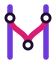
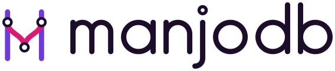
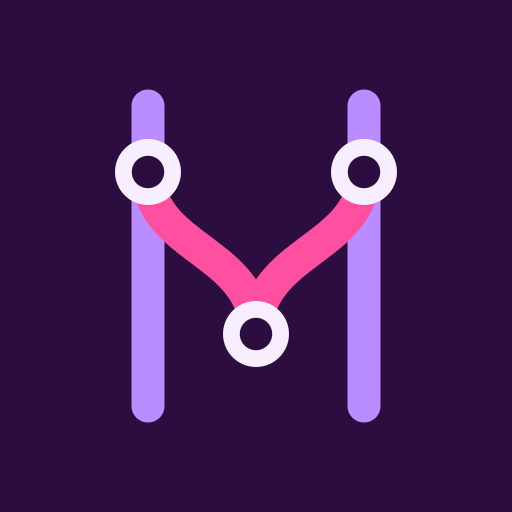
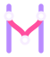

Relationships, first.
The ManjoDB identity is drawn in a graph developers already read every day: two lanes, a branch, a commit, and a merge. Together they make an M.
The mark is a commit graph.
Read top to bottom, the way git log --graph prints history. A branch leaves the first lane, records one commit in the middle lane, and merges into the third. Two rails and one path: a relationship with direction and evidence, which is what ManjoDB stores.
- rails
- Two lanes that run past the frame. They are drawn ascender-to-baseline, like the stems of the d and b in the wordmark.
- branch
- The one colored path. It is the relationship, and it is the only accent the identity uses.
- vertices
- Branch, commit, merge. Open rings that cut the lanes beneath them, always in ink or white, never colored.
Clear space is one lane: the distance from a rail to the middle lane (18 units on the 56 × 64 grid) on every side. Minimum size is 24 px tall for the mark and 136 px wide for the lockup, where its mark reaches 24 px. Below 24 px, use the favicon file, which has solid vertices and heavier lanes.
The same lanes draw every answer.
Diagrams in ManjoDB docs and tools use the mark's notation: nodes are vertices, relationships are lanes, and color only ever marks an edge, in the query text as well as in the drawing. Every diagram shows a real query and its result. This is the first reference workload, dependency impact.
find dependency: Service where dependency.key = $service_key follow dependency through link: DEPENDS_ON from consumer: Service follow consumer through OWNS from owner: Team show consumer._id, consumer.name, owner.name, link._id take 50Synthetic example data
| consumer_id | consumer_name | owner_name | link_id |
|---|---|---|---|
| 12 | checkout | Payments | 81 |
| 14 | billing | Finance | 84 |
Color lives on the edges.
The identity has one rule for color. Relationships get the pink and violet; vertices, text, and grounds stay achromatic. That is "relationships, first", applied to the palette. On plum the lanes are bright; on white they deepen to keep at least 4.5:1 contrast.
One geometry, every size.
The wordmark is drawn with the mark's own stroke, round caps, and monoline weight. Its j wears a commit ring for a dot. Never retype it in a font; use the files.




Where developers will meet it.
The terminal, a browser tab, the docs header, and a package page. The CLI shown is the proposed manjo interface; nothing here is released yet.
$ manjo reach --start Service.key=identity \ --direction in --types DEPENDS_ON o identity depth 0 |\ | o checkout depth 1 via 81 | | | o portal depth 2 via 93 | o billing depth 1 via 84 3 reachable · witness paths shown · synthetic data
Four things the mark never does.
Color a vertex. Color belongs to edges only.
Add a gradient. Lanes are flat, one color each.
Rotate it. Lanes run vertically; history reads top to bottom.
Retype the wordmark in a font. Use the drawn files.
The files.
Every file is vector, generated from one geometry by brand/build_logo.py. Change the geometry there, never by hand. The name honors Manjo, a friend with a love of deep mathematics.
- Lockup, light
logo/Downloadmanjodb-lockup.svg - Lockup, on plum
logo/Downloadmanjodb-lockup-reverse.svg - Mark, light
logo/Downloadmanjodb-mark.svg - Mark, on plum
logo/Downloadmanjodb-mark-reverse.svg - Mark, one color
logo/Downloadmanjodb-mark-mono.svg - Wordmark
logo/Downloadmanjodb-wordmark.svg - Wordmark, on plum
logo/Downloadmanjodb-wordmark-reverse.svg - App icon
logo/Downloadmanjodb-app-icon.svg - Favicon
logo/Downloadfavicon.svg